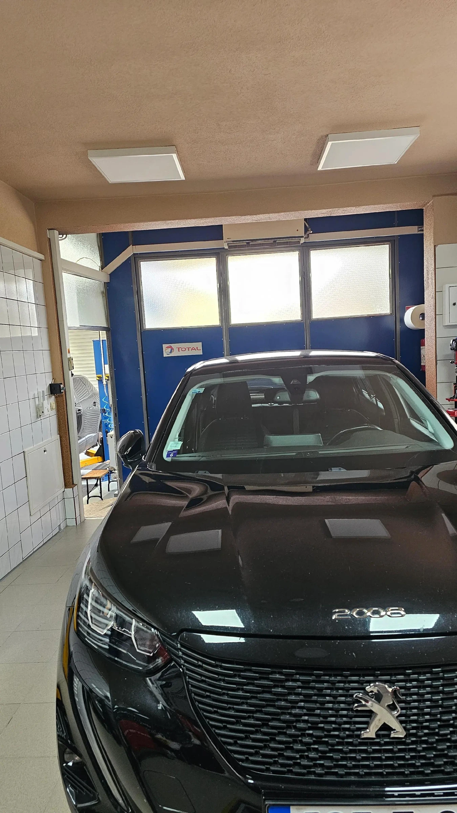
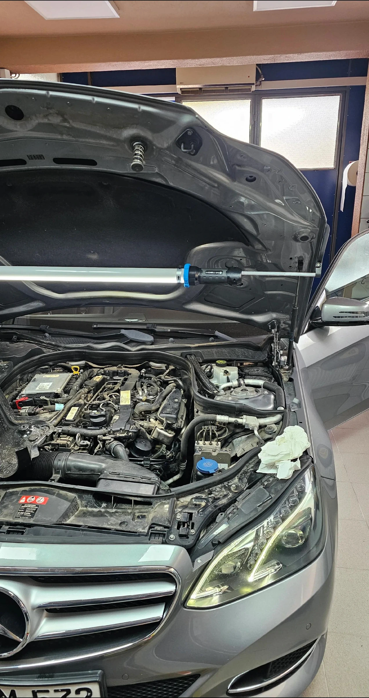

Auto Servis Šunja
Servis i popravke za sve marke vozila, uz posebno iskustvo s Peugeotom. Dijagnostika, servis, autoelektrika i ključevi, sve na jednom mjestu.
Šta radimo
Autodijagnostika
Dijagnostika i otkrivanje kvarova na vozilu.
- Čitanje i brisanje grešaka
- Provjera svih sistema vozila
- Jasan nalaz prije popravke
Peugeot servis
Održavanje i popravke Peugeot vozila.
- Poznavanje Peugeot sistema
- Savjet za daljnje održavanje

Mali servis
Zamjena motornog ulja i filtera.
- Ulje i filteri po specifikaciji
- Pregled kočnica i ovjesa

Veliki servis
Zamjena zupčastog remena i dijelova prema servisnom intervalu.
- Zupčasti remen i roleri
- Svjećice, filteri i tekućine
Autoelektrika
Dijagnostika i popravka električnih sistema vozila.
- Akumulator, alternator, elektropokretač
- Instalacije i osigurači
- Senzori i elektronika vozila

Ključevi i daljinski
Izrada i programiranje auto ključeva i daljinskih upravljača.
- Rezervni i izgubljeni ključevi
- Kodiranje i programiranje
- Popravka daljinskih upravljača
Iz naše radionice


Auto Servis Šunja u Goraždu
Auto Servis Šunja se nalazi na adresi Hajra Lakovića 38, 73000 Goražde. Bavimo se autodijagnostikom, malim i velikim servisima, autoelektrikom te izradom i programiranjem ključeva i daljinskih upravljača.
Ocjena na Google kartama
Prosječna ocjena servisa na Google kartama, na osnovu 33 recenzija naših mušterija. Hvala vam na povjerenju!
Pogledajte na Google kartama ↗Lokacija servisa
Hajra Lakovića 38, 73000 Goražde, Bosna i Hercegovina.
AdresaHajra Lakovića 38, 73000 Goražde, Bosna i Hercegovina.
Radno vrijemePon – Sub: 10:00 – 18:00 · Nedjelja: zatvoreno